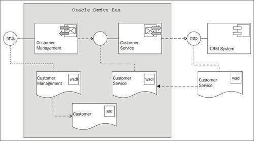
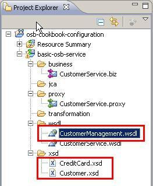
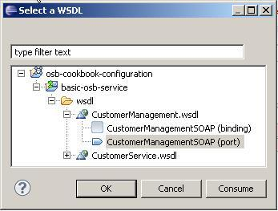
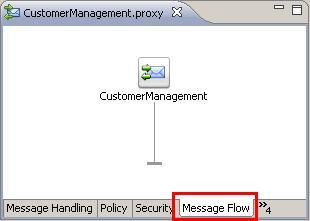
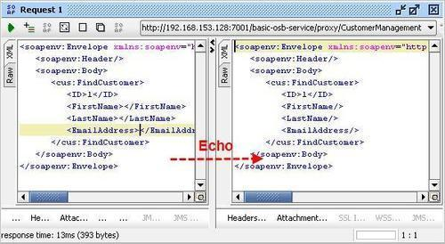

In the previous recipe, we have created an OSB service with a pass-through proxy service, which offered the same SOAP-based interface as the external service.
In this recipe, we will create a proxy service Customer Management which uses its own WSDL (CustomerManagement) to define a SOAP-based web service interface to its consumers:

Make sure that you have the basic-osb-service project from the previous recipes available in Eclipse OEPE. We will start the recipe from there. If needed, it can be imported from here: \chapter-1\getting-ready\pass-through-proxy-service-created. Delete the pass-through proxy service by right-clicking on CustomerService.proxy, selecting Delete, and then confirm the deletion by clicking on the OK button.
In order to create the proxy service, we need to define the service interface (WSDL) for that new service. We won't create the WSDL in this recipe. The WSDL file and the corresponding XML schema files are available in the \chapter-1\getting-ready\definition\xsd\ folder.
We start this recipe by first copying the WSDL and the corresponding XML schema files into the OSB project, and then create the new proxy service.
In Eclipse OEPE, perform the following steps:
\chapter-1\getting-ready\definition\xsd folder into the xsd folder of the project. \chapter-1\getting-started\definition\wsdl folder into the wsdl folder in the OSB project.
With the WSDL file in place, we can create the proxy service. Still in Eclipse OEPE, perform the following steps:
CustomerManagement for the name of the proxy service into the File name field and click on the Finish button.

So far the message flow only consists of the interface, which is based on the WSDL. The flow logic itself is empty. If no further actions are added to the message flow, the proxy service works in an 'echo mode'. All the request messages sent to the proxy service are returned unchanged.
Try it by deploying the project to the OSB server and test it through the console or soapUI. To use soapUI for that, create a new soapUI project and import the WSDL. It should be available from here: http://[OSBServer]:[Port]/basic-osb-service/proxy/CustomerManagement?wsdl.
The following screenshot shows the behavior of the 'echo proxy service', when invoked from soapUI:

This is not the behavior that we want from our proxy service. In the next recipe, we will add a Routing action to the message flow, so that the business service the external service is called.
The echo behaviour seems to be strange at the beginning and it's hard to find a use case in the way just shown. But it's good to see and know that the message flow just returns if there are no (more) actions to execute. Whatever the $body variable holds at that time is returned as the response message.
This behaviour can be used to implement a very simple mock service.
A mock service is a service which simulates the behaviour of the real service or part of it. If we have the WSDL but not yet an implementation, we can create a proxy service and due to the echo behaviour, all we need is an assignment to the $body variable (to set up the response), just before the request message is passed back. This can be achieved by a Replace or Assign Action inside a Pipeline Pair Node/Stage pair.
We can also use soapUI to implement mock services. SoapUI provides a lot of functionality to implement very flexible mock services.